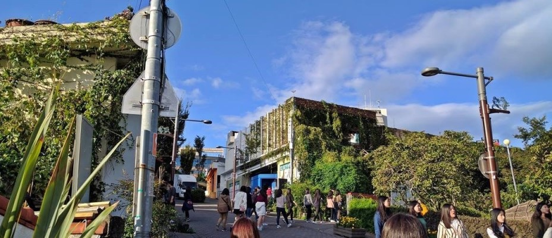
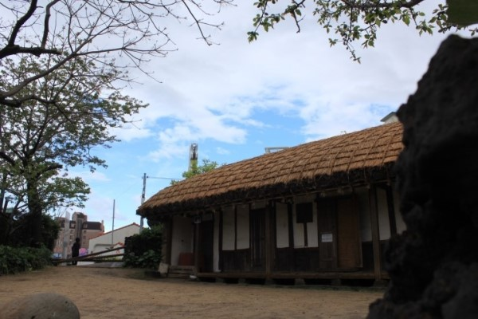
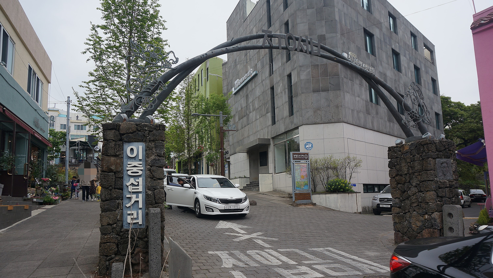

이중섭거리
#제주도 #이중섭거리 #이중섭미술관 #이중섭생가 #미술관
insta
map
강한 필치의 소 그림으로 유명한 화가 이중섭을 기념하기 위해 만든 곳으로 6·25전쟁 중 피난민으로 제주에 내려와 일본인 아내,
두 아들과 함께 기거했던 집을 서귀포시에서 인수해 기념관으로 단장하고 그 뒤편에 미술관을 세웠다.
궁핍한 피난민의 생활이었지만 가족과 함께였기에 제주에서 그려낸 이중섭의 그림들은 더욱 뛰어나다는 평가를 받는다.
기념관은 초가지붕의 제주 전통 가옥으로 그나마도 이중섭이 기거했던 곳은 달랑 방 한 칸이었다고 한다.
그래도 이중섭의 가족은 서귀포에서 가장 행복한 시간을 보냈고 작가는 그 짧은 시기를 지상 낙원으로 표현해냈다. 툇마루에 앉아 굴곡진 작가의 삶을 되짚어보는 것도 의미 있는 일이겠다. 돌담을 따라 야트막한 언덕 위의 이중섭 미술관으로 들어가면 상설전시실에서는 그의 작품들을 감상할 수 있고 기획전시실에는 이중섭과 가깝게 지냈던 벗들의 작품이 전시되어 있다.
그래도 이중섭의 가족은 서귀포에서 가장 행복한 시간을 보냈고 작가는 그 짧은 시기를 지상 낙원으로 표현해냈다. 툇마루에 앉아 굴곡진 작가의 삶을 되짚어보는 것도 의미 있는 일이겠다. 돌담을 따라 야트막한 언덕 위의 이중섭 미술관으로 들어가면 상설전시실에서는 그의 작품들을 감상할 수 있고 기획전시실에는 이중섭과 가깝게 지냈던 벗들의 작품이 전시되어 있다.
| 이중섭미술관 | ||
| 어른(25~64세) | 1500원 | |
| 청소년(13~24세) | 800원 | |
| 어린이(7~12세) | 400원 |
거리는 이용시간제한없음
미술관 : 매일 09:00~18:00 [월요일 휴무]
미술관 : 매일 09:00~18:00 [월요일 휴무]
064-787-4501
제주 서귀포시 이중섭로29